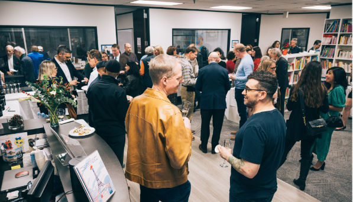
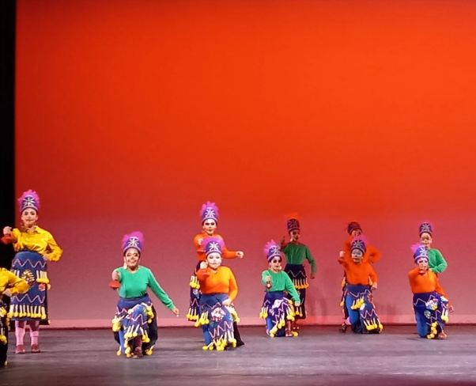
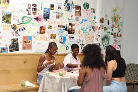
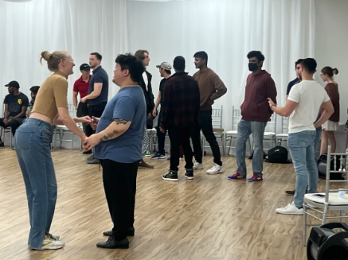
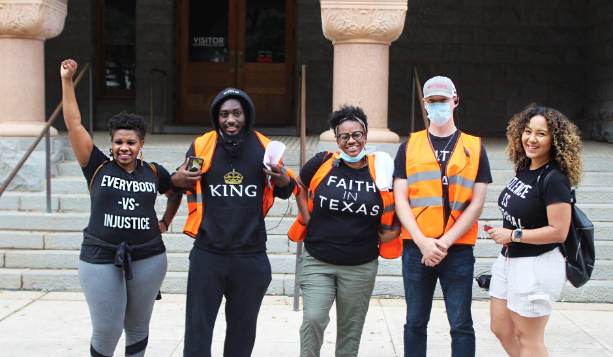
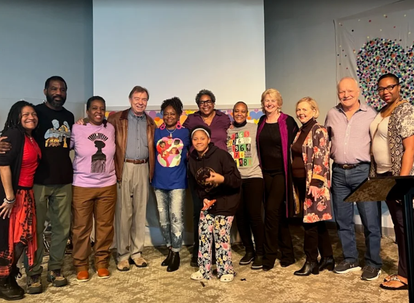
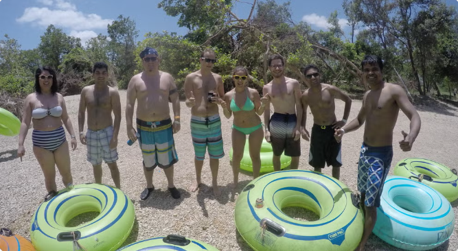
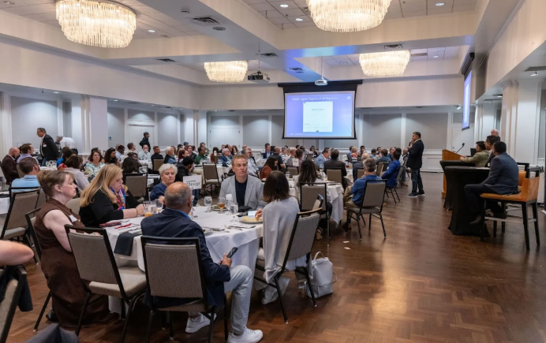
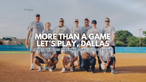

Category:Culture & Identity
Group:Alliance Francaise de Dallas
Location: 15150 Preston Rd #250, Dallas, TX 75248
Description: French language lessons
Kinnly is a niche group guide, with the sole purpose of helping you find your people. Discover others of like mind, or step out of your comfort zone and discover a new passion. Whichever pursuit you need, Kinnly is here to help you discover Dallas, yourself, and your new family of friends.
Here is a list of groups that are hot and upcoming in the DFW community for all ages. Whether you are into art, technology, faith, or culture, there is a community waiting for you. Find a new club, community center, or class below.

Location: 15150 Preston Rd #250, Dallas, TX 75248
Description: French language lessons

Location:2600 Live Oak St, Dallas, TX
A community for lovers of Latin American Art and Culture. Represent the LCC by assisting with events.

Location:1808 S Good Latimer Expy, Dallas, TX 75226
Description: Immersive digital and physical arts networking community

Location: 2309 Springlake Rd Suite 600, Farmers Branch, TX 75234
Description: A one stop shop for various forms of arts' lessons for young adults.

Location: 1111 W Mockingbird Ln #260, Dallas, TX 75247
Desctiption: A multi-faith group that focuses on the harmony between different religious practices in Texas to build understandning and unity.

Location: 4801 Spring Valley Rd #113, Dallas, TX 75244
Description: A multi-faith group that practices scientology along with spiritual meditation with a focus on compassion, creativity, and joy.

Location:Dallas,Texas
A group of young professionals, age 21-31, who gather for drinks, adventures, concerts, sports, and more.
Location:Dallas, TX
A group of young professionals that network at mixers to connect with others in related or new fields.

Location:819 W. Arapaho Road, Suite 24B #183 Richardson, TX 75080
Technology enthusiasts and career professionals who gather for professional networking events to share ideas and resources.
Location:Plano,TX
A collective of software developers, agile leaders,product management, and design that shares innovative way to work.

Location: Dallas/Houston/Austin,TX

Location:Dallas,TX
Social group offering a diverse number of sporting games and teams to keep fitness fun.